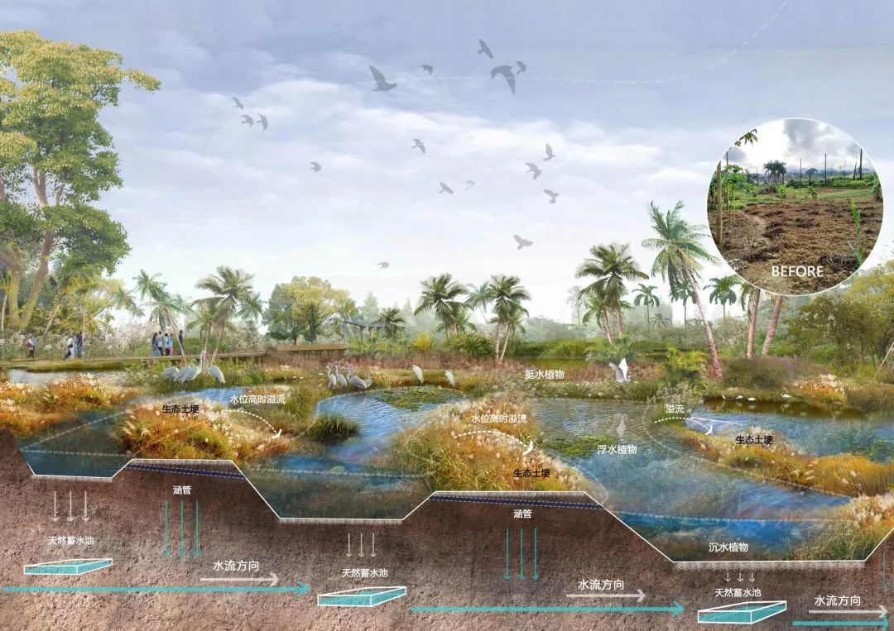

生物多样性
生物多样性是生物（动物、植物、微生物）与环境形成的生态复合体以及与此相关的各种生态过程的总和，包括生态系统多样性、物种多样性和基因多样性三个层次。
生物多样性使地球充满生机，也是人类生存和发展的基础，可通过就地保护和迁地保护等方式加以保护。
生态系统多样性
生态系统多样性是指生物圈内生境、生物群落和生态过程的多样化以及生态系统内生境、生物群落和生态过程变化的多样性。生态系统是生态学上的一个主要结构和功能单位，对生态系统的研究不仅要关注组成生态系统的生物成分与非生物成分，还需要重视生态系统中的能量流动、物质循环和信息传递。同时，生态系统是一个动态的系统，经历了从简单到复杂的发展过程，并以动态的平衡保持自身稳定。因此，生态系统多样性是一个高度综合的概念，既包含生态系统组成成分的多样化，更强调生态过程及其动态变化的复杂性。
行动方案
生物多样性行动方案是一个广受国际认可的计划，因应受到威胁的物种和栖息地，旨在保护和恢复生物系统及其多样性。最初推动这些计划的努力来自于1992年的生物多样性公约。至2006年止，共有188个国家批准；但是只有少数参与国发展及编定了具有实际意义的计划文献。
物种计划
根本实践生物多样性行动计划的方式便是着重纪录个别物种的族群分布跟保育情况。此方式虽然基本却困难重重，主要因为世界上的物种估计只有约百分之十被记载下来。大部分未知的物种为植物或低等生物。许多哺乳类、鸟类和爬虫的资讯常可见于文献，至於植物跟无脊椎动物就需要可观的地区资料采集。编纂族群数量预测的趋势有助于了解生物变迁和脆弱性的动态资讯。对世界上某些地区来说，编订完整的物种目录不切实际。好比说马达加斯加干燥落叶林内的许多物种完全不为人知，科学家对该林内许多地区也从未发起有系统的探险活动。
生物多样性行动计划内的物种计划应包含对分布范围、栖地、行为、生殖、异种互动的详细描述。一旦认定保育情况，就可订定计划；保育跟复育此物种至该族群的目标数量。有计划的保护要素举例如下：栖地还原、防止都市发展影响栖地、建立财产所有权、限制畜牧及农业活动侵略、减少火耕农业、立法制止采集或猎杀、限制杀虫剂使用、控制其他环境污染。此计划应向大众和私人机构宣布并实行保育计划，也应拨款确保执行。
栖地计划
在一定数量的数种生物栖息于某地时，生物多样性行动的栖息地保护便可适当实施。举例如苏格兰的酸性沼泽、南非布许斐的瓦特堡生物圈、加州的海岸湿地、以及瑞典阿兰岛的史托拉阿瓦雷特。在这样的情况下，物种详细清单、地理分布跟栖地品质需要记录。然后用来保护复育的计划可以依照上述物种计划的类似方针制定。